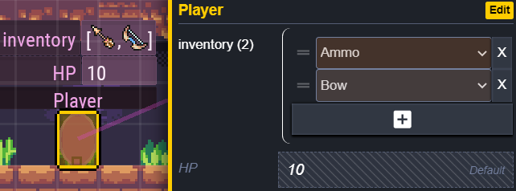
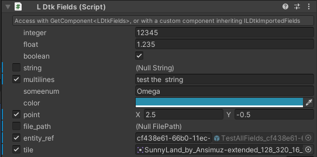

Fields
Entity Instances can have fields in the LDtk editor. They can translate to Unity.

Instantiated Entity/Level prefabs will gain a fields component if they are defined in LDtk.

You can get any field's value on an entity/level with the field's matching identifier through code.
During Runtime: Get a reference to the component.
int hp = GetComponent<LDtkFields>().GetInt("HP");During Import: Use the ILDtkImportedFields interface on any custom scripts.
public class Player : MonoBehaviour, ILDtkImportedFields { public Item[] items; public int health; public void OnLDtkImportFields(LDtkFields fields) { items = fields.GetEnumArray<Item>("inventory"); health = fields.GetInt("HP"); } }
Nullables
Fields are nullable from within LDtk. They are also reflected in the fields component and can be checked if they are null in code.

See: LDtkFields.IsNull
Note
The
MultiLinestype translates to create new lines correctly for Unity's text components.
(ex. Text, TextMesh, etc)IntorFloatmay not translate to the expected value if they were set to display as a radius in LDtk.
This is to match the physical relative radius of entities in the LDtk editor, in case the pixels per unit setting in the importer inspector are different then expected.PointtoVector2will not translate to the expected vector values.
This is because the coordinate system in LDtk is based on a top-left origin point, and Unity's is bottom-left. WhenPointis converted over to Unity, it adjusts the Y vector value to maintain a correct position in world space. Because of this, thePointfield is not a dependable Vector2 for conventional means and is only expected to store values for position use-cases.Enum values are serialized as strings in the inspector.
This is because enum scripts may or may not be generated.
See the Enums Section to learn about generating enum files during import.Entity References are internally their
iidstring. When getting the entity reference from code, it will get their GameObject of their specificiid. If the object was not found, then it will return null.